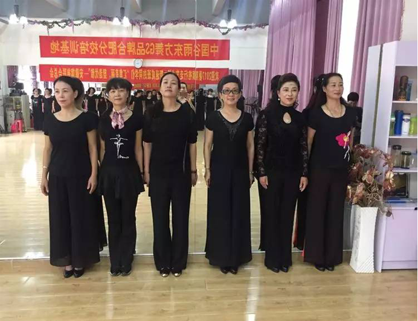

活动内容
我的
2017暑假行走旗袍艺术
活动内容

2017省旗袍联合总会旗袍行走艺术第三期暑期速成班8月11日一13日在合肥集中培训,现圆满结束！学无止境~学习旗袍行走艺术接受新的模特行走方位是我想学的，因年龄及身体状况每天六小时二天半十六个课时要穿高跟鞋不停的来回行走，能否坚持是关健,但我热爱旗袍文化,喜欢旗袍,用心品读这世间最柔美的艺术,做自己喜欢的事,坚持与来自省内有关地市的六十余位旗袍佳丽们认真学习,！
2017省旗袍联合总会旗袍行走艺术第三期暑期速成班8月11日一13日在合肥集中培训,现圆满结束！学无止境~学习旗袍行走艺术接受新的模特行走方位是我想学的，因年龄及身体状况每天六小时二天半十六个课时要穿高跟鞋不停的来回行走，能否坚持是关健,但我热爱旗袍文化,喜欢旗袍,用心品读这世间最柔美的艺术,做自己喜欢的事,坚持与来自省内有关地市的六十余位旗袍佳丽们认真学习,！